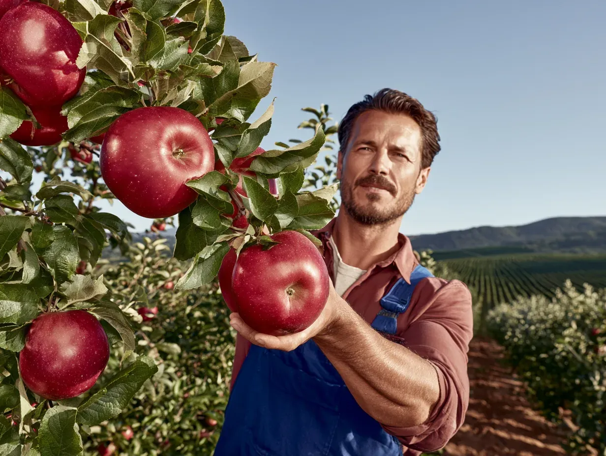

Łańcuch dostaw
Nasi dostawcy - Twoja gwarancja jakości
Nasze owoce są zawsze świeże, soczyste i smaczne, ponieważ skrupulatnie wybieramy dostawców. Dla Państwa pracowników - najlepszych specjalistów w Polsce - dostarczamy wyłącznie produkty najwyższej jakości.
Fair Trade
GlobalG.A.P.
Rainforest Alliance

12
dostawców
200+
ton / mies.
4
certyfikaty